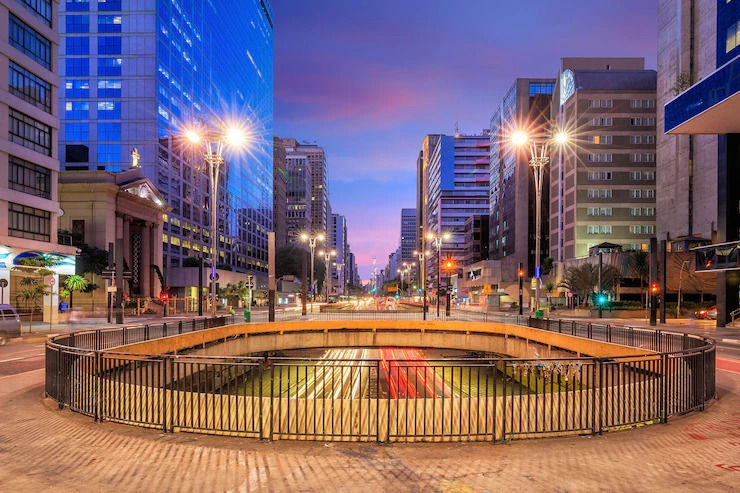

Sobre São Paulo - AV. Paulista
Com menos de três quilômetros de extensão, a Avenida Paulista é talvez o logradouro mais famoso do Brasil. De endereço da elite cafeicultora e industrial a centro financeiro de São Paulo, a Paulista também se tornou um espaço de democracia, recebendo protestos e manifestações contra e a favor das mais diversas causas. Hoje, é um dos principais polos culturais e de lazer da maior cidade do país.